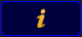

A show can be loaded from any tab in the Backup Menu.
When Load Show is tapped in the Backup Menu then it will open a pop-up like this:
Here is a list of the shows in the selected tab.
On the right side it is possible to choose what data that will be loaded from the selected show.
The idea is that it is possible to load just a small part of a different show into the currently loaded show.
This is activated as a default. The show data is the patch and fixture schedule, stored sequences, presets, groups, effects, and so on. Basically everything that is in a pool somewhere and the imported 3D elements and their location in the 3D stage.
If the Show Data is loaded and not the User Profiles (read below), then the existing User Profiles will be overwritten with the ones from the show being loaded and it will add the additional User Profiles from the show. It will not add Users.
The time configuration is the time, location, daylight savings settings and NTP (Network Time Protocol) setup.
The global settings are the ones found in Setup -> Console -> Global Settings. The settings here are shared in the session and includes enabling and disabling the Remote and Telnet, RDM, WYSIWYG, and so on.
The local settings are the ones found in Setup -> Console -> Local Settings. These settings only affects the local console and not all consoles in a session. It includes settings like the console language and LED background light settings.
Network protocols are the settings for outputting DMX via an Ethernet connection. It includes ArtNet, sACN, ETC-Net2, KiNet1, Pathport and Shownet. These are found in Setup -> Network -> Network Protocols.
Network configuration is the settings for what devices should be in the session and the DMX port settings on the Consoles, onPC Wings and NPU's.
User Profiles keep all the data that is connected to the Users. Loading this data will delete all the Users and User Profiles in the current show and load all the Users and User Profiles from the show file being loaded.
There is a Check All button that selects all the above boxes.
As a default only the main show files are displayed, but it is possible to also choose to load data from a backup version of the show.
In the picture above there is a button called "Viewing Shows". This is a button with three different modes:
All columns in this pop-up can be sorted in ascending or descending order. This can be done by pressing the Edit key and then the column title. If a mouse or trackball is connected, then it is also possible to right click the column title.
In the title bar it is possible to toggle the information button. It looks like this (active): .
When it is active then the information about the selected show are displayed at the bottom. It is information about the different software versions it has been through and when it was last saved in those versions.
It is also possible to see the information that has been saved into the show by the users. Read more about this in Save Show topic.
When the desired show file and the wanted data type is selected, then tap the Load Show button.
It is possible to cancel the load process by tapping the Cancel button or the big X in the upper right corner on the pop-up.
<path>/gma2onpc.exe -s:my_showfile
Loads the show file my_showfile.show.gz from the gma2/shows folder of the corresponding software version.
Show files can be loaded using the command line. The command is called LoadShow. Read more about it here.